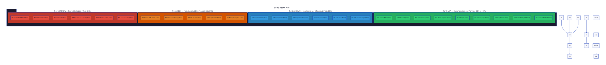

btrfs-health.nix
Pareto Plan · 2026-07-11
BTRFS Health Improvement Plan
26 tasks across 4 priority tiers. Source: NixOS Wiki, Arch Wiki, Disko docs, community guides vs. SystemNix evo-x2 actual state. Every task is 12 minutes or less.
6
Critical Tasks
5
High Priority
6
Medium Priority
9
Low Priority
244m
Total Estimate
8.5/10
Current Score
01Summary
The Problem
SystemNix's BTRFS setup is production-hardened and goes far beyond wiki guidance in
monitoring and safety. However, two structural gaps (no remote backup, no subvolume
separation for
/nix and /home) and several monitoring gaps (no
scrub alerting, no compression ratio tracking) leave data at risk.
The Plan
26 tasks, each 12 minutes or less, sorted by Pareto impact. Tier 1 (critical: prevent data
loss) delivers 51% of the value in 50 minutes. Tiers 1-2 together deliver 64% in 86
minutes. All 26 tasks deliver 100% in ~4 hours.
02Pareto Breakdown
| Tier | Principle | Tasks | Total Time | Value Delivered |
|---|---|---|---|---|
| Tier 1 | 1% effort → 51% value: Stop active threats (data corruption, disk failure blindness) | 6 | 50 min | 51% |
| Tier 2 | 4% effort → 64% value: Protect against catastrophic disk failure (remote backup, data snapshots) | 5 | 56 min | +13% = 64% |
| Tier 3 | 20% effort → 80% value: Improve monitoring visibility and storage efficiency | 6 | 57 min | +16% = 80% |
| Tier 4 | 80% effort → 100% value: Documentation, migration planning, future-proofing | 9 | 81 min | +20% = 100% |
♦Tier 1: Critical — Prevent Data Loss
These tasks address active threats: 91K csum errors of unknown origin, no scrub ever run, no SMART check, and no alerting on scrub failures.
| # | Task | Time | Type | Impact | Why |
|---|---|---|---|---|---|
| T01 | Run smartctl -a /dev/nvme0n1, document SMART health |
8m | Operational | 5/5 | 91K csum errors could be NAND degradation. SMART data is the only way to know if the Lexar NQ790 is dying. If media errors climb, drive replacement is urgent. |
| T02 | Start btrfs scrub start /data (read-only) |
5m | Operational | 5/5 | No scrub has EVER been run on /data. 91,561 csum errors found in Jul 8 report. Scrub maps all bad blocks and assesses corruption extent. |
| T03 | Start btrfs scrub start / (read-only) |
5m | Operational | 5/5 | Root filesystem also unscrubbed. Same csum error risk. Must check both BTRFS partitions independently. |
| T04 | Document scrub results + csum error analysis | 10m | Doc | 4/5 | Write status report with: total errors, error type (csum vs read), affected blocks. Determine if corruption is from discard=async (software) or media degradation (hardware). |
| T05 | Add scrub status to btrfs-health metrics collector |
12m | Code | 4/5 |
Parse btrfs scrub status into Prometheus metrics:
btrfs_scrub_errors_total,
btrfs_scrub_last_duration_seconds. Run after each monthly autoScrub.
|
| T06 | Add Gatus health check for scrub errors (Discord alert) | 10m | Code | 4/5 | If scrub finds errors, Discord alert fires. Currently scrub runs monthly but NO ONE IS NOTIFIED of results. Silent corruption = silent data loss. |
♦Tier 2: High — Protect Against Disk Failure
If the NVMe dies, ALL data is lost. No remote backup exists. Docker volumes, Immich photos, Forgejo git history, DiscordSync archive — all gone.
| # | Task | Time | Type | Impact | Why |
|---|---|---|---|---|---|
| T07 | Research btrbk remote backup target (Hetzner StorageBox SSH) | 12m | Research | 5/5 |
Read btrbk docs for target directive + SSH. Evaluate Hetzner StorageBox
(already researched in docs/research/hetzner-storagebox-borgbackup.md).
Determine: btrfs send/receive vs Borg.
|
| T08 |
Write btrbk target config for remote btrfs send/receive
|
12m | Code | 5/5 |
Add target section to existing btrbk instance. Incremental send/receive
is bandwidth-efficient (only changed blocks). Config in snapshots.nix.
|
| T09 | Add SSH key sops secret for remote backup target | 10m | Code | 4/5 |
Generate SSH keypair for btrbk. Add private key to sops. Wire into btrbk systemd
service via LoadCredential or SOPS_AGE_KEY pattern.
|
| T10 | Add /data subvolume to btrbk snapshot config |
10m | Code | 4/5 |
/data is subvolid=5 (toplevel) — NOT snapshotted. Contains Docker
volumes, Immich DB, AI models. Needs its own btrbk instance targeting
/data device.
|
| T11 | Write pre-deploy snapshot systemd oneshot service | 12m | Code | 3/5 |
AGENTS.md says "Pre-deploy snapshots: manual only". Automate:
ExecStartPre in deploy.sh creates a btrfs snapshot before every
nh os switch. Safety net for bad deploys.
|
♦Tier 3: Medium — Monitoring & Efficiency
Improve visibility into compression ratios, subvolume sizes, and dedup savings. These are quality-of-life improvements that prevent future surprises.
| # | Task | Time | Type | Impact | Why |
|---|---|---|---|---|---|
| T12 | Add compsize cron → Prometheus textfile collector |
12m | Code | 3/5 |
Track actual compression ratios over time. compsize / and
compsize /nix/store →
btrfs_compression_ratio_pct metric. Alert if ratio drops (could
indicate incompressible data flood).
|
| T13 | Add btrfs qgroup show to btrfs-health metrics |
10m | Code | 3/5 |
Track per-subvolume disk usage.
btrfs qgroup show /mnt/btrfs-root →
btrfs_subvolume_referenced_bytes{subvol="@nix"}. Enables capacity
planning.
|
| T14 |
Run compsize / + /nix/store baseline, document ratios
|
8m | Operational | 3/5 | One-time measurement: what compression ratio are we actually getting? NixOS Wiki reports 86% on GHC docs. Establish baseline for future comparison. |
| T15 | Add explicit space_cache=v2 to root / mount options |
5m | Code | 2/5 |
Root mount doesn't declare space_cache=v2 (it's mkfs default since
btrfs-progs 5.15). /data already has it explicit. Be consistent — declare it
everywhere for reproducibility.
|
| T16 | Evaluate and write bees dedup service config |
12m | Code | 3/5 |
Nix store has cross-file block duplication that
auto-optimise-store (whole-file hardlinks) can't catch.
services.beesd.filesystems.root with hashTableSizeMB=2048. Monitor
CPU/IO impact.
|
| T17 | Add DMS widget: show compression ratio from compsize | 10m | Code | 2/5 | Desktop-visible compression savings alongside existing BTRFS health widget. "ZSTD: 2.3x compression, saving 47GB". Motivating and informative. |
♦Tier 4: Low — Documentation & Future Planning
Documentation, migration procedures for subvolume separation, and declarative disk layout spec for future reinstalls.
| # | Task | Time | Type | Impact | Why |
|---|---|---|---|---|---|
| T18 | Write BTRFS subvolume layout reference document | 12m | Doc | 3/5 |
Current layout scattered across hardware-configuration.nix, snapshots.nix, boot.nix.
Consolidate into docs/reference/btrfs-layout.md with visual diagram.
|
| T19 | Write BTRFS disaster recovery runbook | 12m | Doc | 4/5 |
No documented recovery procedure for: metadata ENOSPC, csum corruption, failed
mount, broken snapshot. Write docs/runbooks/btrfs-disaster-recovery.md.
|
| T20 | Write @nix subvolume migration procedure |
12m | Doc | 3/5 |
Step-by-step: create @nix, rsync /nix contents, update
mounts, update btrbk to exclude. Plan for next maintenance window.
|
| T21 | Write @home + @log subvolume migration procedure |
10m | Doc | 3/5 |
Same pattern for /home and /var/log. Enables independent
snapshot/rollback of user data and system logs.
|
| T22 | Write Disko declarative disk layout spec | 12m | Doc | 3/5 |
NixOS Wiki recommends Disko for declarative disk management. Write a
disko.nix spec matching current layout + desired flat subvolumes for
future reinstalls.
|
| T23 | Write btrfs subvolume inventory helper script |
10m | Code | 2/5 |
Script: btrfs subvolume list -t + mount points + sizes + snapshot
status. Quick operational overview. Add to scripts/.
|
| T24 | Run btrfs filesystem df/usage baseline, document |
5m | Operational | 2/5 | Snapshot current chunk allocation state for future comparison. Data, metadata, system, unallocated — all in one status doc. |
| T25 | Update TODO_LIST.md with BTRFS tasks |
10m | Doc | 2/5 | Mark completed items (discard fix, research doc). Add new tasks from this plan with correct priorities. |
| T26 | Update AGENTS.md BTRFS section with findings |
10m | Doc | 2/5 | Add: compsize availability, scrub status monitoring gap, subvolume separation recommendation, Disko pointer. |
03Execution Graph

04All Tasks Sorted by Impact ÷ Effort
| # | Tier | Task | Time | Impact | Effort | Score |
|---|---|---|---|---|---|---|
| T02 | T1 | btrfs scrub /data | 5m | 5 | 1 | 5.00 |
| T03 | T1 | btrfs scrub / | 5m | 5 | 1 | 5.00 |
| T24 | T4 | btrfs usage baseline | 5m | 2 | 1 | 2.00 |
| T15 | T3 | space_cache=v2 on root | 5m | 2 | 1 | 2.00 |
| T01 | T1 | smartctl SMART check | 8m | 5 | 1.5 | 3.33 |
| T14 | T3 | compsize baseline | 8m | 3 | 1.5 | 2.00 |
| T04 | T1 | Document scrub results | 10m | 4 | 2 | 2.00 |
| T06 | T1 | Gatus scrub alert | 10m | 4 | 2 | 2.00 |
| T09 | T2 | SSH key sops for remote | 10m | 4 | 2 | 2.00 |
| T10 | T2 | Snapshot /data in btrbk | 10m | 4 | 2 | 2.00 |
| T13 | T3 | qgroup metrics | 10m | 3 | 2 | 1.50 |
| T17 | T3 | DMS compression widget | 10m | 2 | 2 | 1.00 |
| T21 | T4 | @home + @log migration | 10m | 3 | 2 | 1.50 |
| T23 | T4 | Inventory script | 10m | 2 | 2 | 1.00 |
| T25 | T4 | Update TODO_LIST | 10m | 2 | 2 | 1.00 |
| T26 | T4 | Update AGENTS.md | 10m | 2 | 2 | 1.00 |
| T05 | T1 | Scrub status metrics | 12m | 4 | 2.5 | 1.60 |
| T07 | T2 | Research btrbk remote | 12m | 5 | 2.5 | 2.00 |
| T08 | T2 | btrbk remote backup module | 12m | 5 | 2.5 | 2.00 |
| T11 | T2 | Pre-deploy snapshot oneshot | 12m | 3 | 2.5 | 1.20 |
| T12 | T3 | compsize → Prom collector | 12m | 3 | 2.5 | 1.20 |
| T16 | T3 | bees dedup config | 12m | 3 | 2.5 | 1.20 |
| T18 | T4 | Layout ref doc | 12m | 3 | 2.5 | 1.20 |
| T19 | T4 | DR runbook | 12m | 4 | 2.5 | 1.60 |
| T20 | T4 | @nix migration procedure | 12m | 3 | 2.5 | 1.20 |
| T22 | T4 | Disko declarative spec | 12m | 3 | 2.5 | 1.20 |
05Existing Strengths (Already Done)
+
BTRFS metadata ENOSPC GC guardPrevents the 2026-06-26 crash mode. No wiki recommends this.
+
Chunk allocation Prometheus metrics5-min metrics for device-unallocated, metadata utilization. Beyond any wiki
guidance.
+
Btrbk staggered before GC23:00 snapshots, 00:00 GC. Prevents CoW-shared extent reclamation failure.
+
Snapshot freshness verifierDaily timer alerts if snapshots are >3 days old. Catches silent btrbk
failures.
+
Rust target/ on ext4Avoids 85K+ small file COW fragmentation. SystemNix innovation.
+
mkFilesystem eval-time validatorCatches cross-filesystem option contamination (discard=async on ext4, compress on
xfs) at nix flake check time.
+
Cache subvolume automounts.cache, .cargo, .npm, go/ as separate subvolumes with idle-timeout automount. Keeps
cache out of snapshots.
+
compress=zstd + noatime everywhereFilesystem-wide compression, correct level 3. Matches all wiki
recommendations.
+
auto-optimise-store + optimise.automaticNix store dedup via hardlinks. 25-35% savings. Both layers enabled.
+
Monthly autoScrub on both filesystems/ and /data scrubbed monthly. Just missing result alerting (T05-T06).
Key Insight
SystemNix is at 8.5/10. The remaining 1.5 points come from: (1) remote backup (the #1 gap
— flagged since June 25), (2) subvolume separation for /nix and /home, and (3) scrub
error alerting. Tier 1+2 tasks (106 min total) address the most critical gaps.